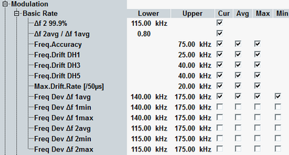
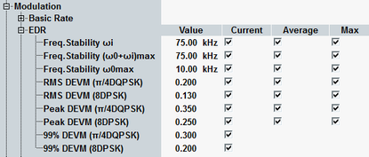
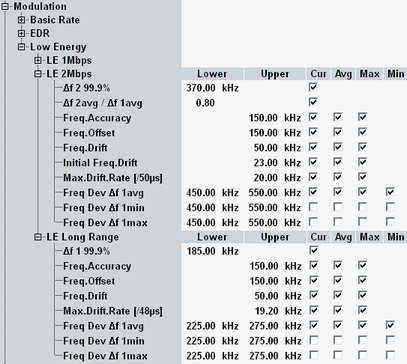

The limits for GFSK-modulated BR packets and DPSK-modulated EDR packets are defined in two sections. Third section for LE limits is divided to sections according to the LE PHY.
The conformance requirements are described in "Modulation Requirements".

Upper and lower limits for the measurement results which characterize the modulation accuracy of BR packets. For a detailed description of the results, refer to "Statistical Modulation Results (BR)".
- "Δf2 99.9%": Lower limit for the frequency deviation Δf2 that must be exceeded by 99.9% of the measured bits
- "Δf2 avg / Δf1 avg": Lower limit for the modulation ratio
- "Freq. Accuracy / Freq. Drift / Max. Drift Rate": Limit for the carrier frequency error, the frequency drift and the maximum drift rate. An "upper" limit of <x> kHz means that the measurement result must be in the range between –<x> kHz and +<x> kHz. The default value of "20.0 kHz" denotes a maximum absolute drift rate of 20 kHz/50 μs.
The R&S CMW supports different drift limits for packet types DH1, DH3 and DH5. - Freq. Dev. Δf...: Limit for the frequency deviation for different payload patterns. The frequency deviations must be in a range between the lower and the upper limits.

Upper limits for the measurement results which characterize the modulation accuracy of EDR packets. For a detailed description of the results, refer to "Statistical Modulation Results (EDR)".
- "Freq. Stability ωi": Upper limit for the initial center frequency error.
- "Freq. Stability (ω0 + ωi)max": Upper limit for the overall uncompensated frequency error.
- "Freq. Stability ω0max": Upper limit for the maximum compensated frequency error.
- "RMS DEVM / Peak DEVM / 99% DEVM": Upper limit for the differential error vector magnitude results. Independent limits for the modulation schemes π/4 DQPSK (2-DHx packets) and 8DPSK (3-DHX) are provided.

Upper and lower limits for the measurement results which characterize the modulation accuracy of LE packets. For a detailed description of the results, refer to "Statistical Modulation Results (LE)".
Option R&S CMW-KM611 is required for LE 1M PHY (uncoded). For LE 2M PHY and LE coded PHY, option R&S CMW-KM721 is also required.
- "Δf1 99.9%": Lower limit for the frequency deviation Δf1 that must be exceeded by 99.9% of the measured bits. This limit is only relevant for LE coded PHY.
- "Δf2 99.9%": Lower limit for the frequency deviation Δf2 that must be exceeded by 99.9% of the measured bits
- "Δf2 avg / Δf1 avg": Lower limit for the modulation ratio
- "Freq. Accuracy": An upper limit of <x> kHz means that the carrier frequency error must be in the range between –<x> kHz and +<x> kHz.
- "Freq. Offset": Carrier frequency error for preamble and payload.
- "Freq. Drift":An upper limit of <x> kHz means that the frequency drift must be in the range between –<x> kHz and +<x> kHz.
- "Initial Freq. Drift": Frequency drift between preamble and payload start.
- "Max. Drift Rate": An upper limit of <x> kHz means that the maximum drift rate must be in the range between –<x> kHz and +<x> kHz per stated time interval. For uncoded PHY, for example, the default value of "20.0 kHz" denotes a maximum absolute drift rate of 20 kHz/50 μs.
- Freq. Dev. Δf...: Limit for the frequency deviation for different payload patterns. The frequency deviations must be in a range between the lower and the upper limits.
All limits listed in the configuration tree are relevant for LE test packet connections. For measurements on advertiser packets, only the limit of frequency accuracy is relevant.
Remote command: